Restaurante Asador Woko
Presentación
Menú
Reservas
Menú
Primeros
Revuelto de Patatas con Jamón 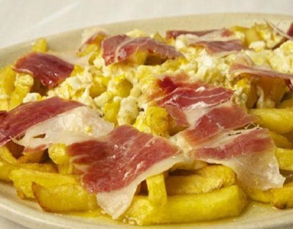
Ensalada César 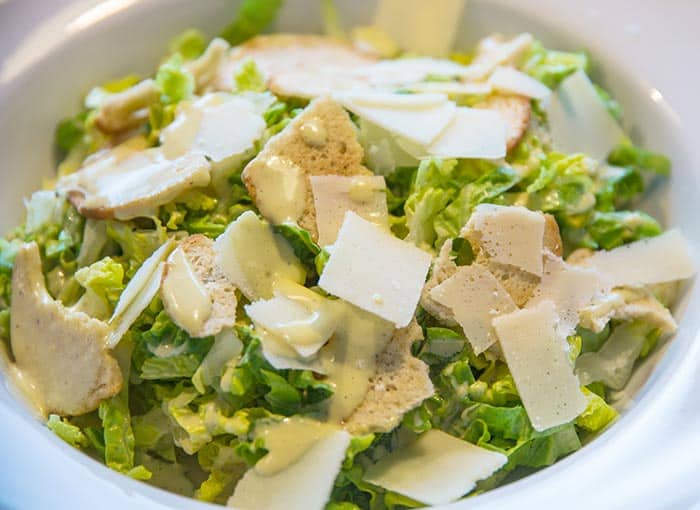
Tabla de Ibéricos 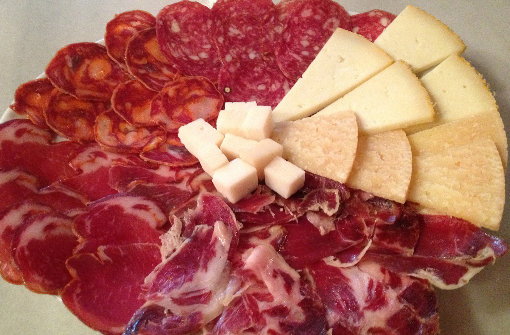
Sopa Castellana 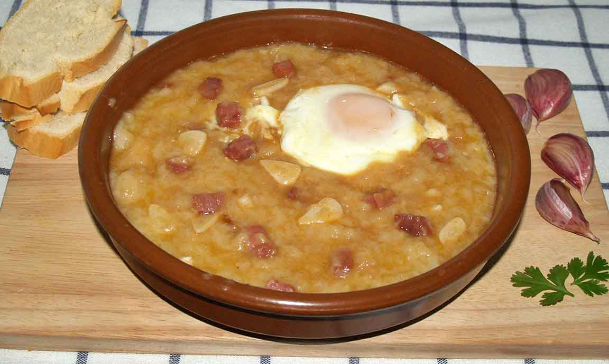
Segundos
Solomillo Ibérico a la piedra 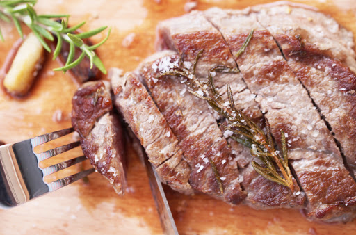
Chuletas de cordero a la brasa 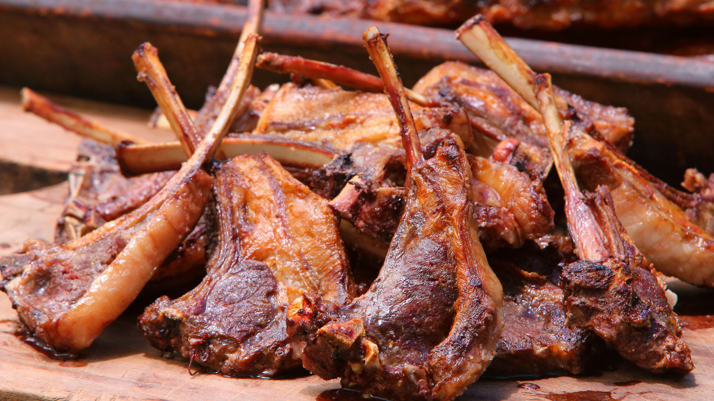
Escalopes de ternera con guarnición de verdura 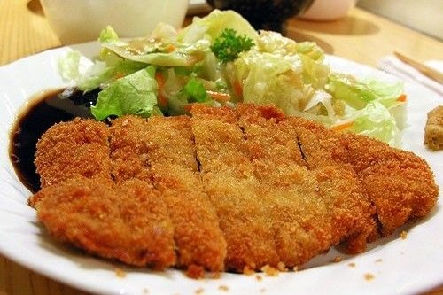
Chuletón de Buey al Pedro Ximenez 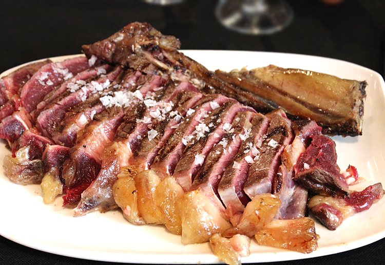
Postres
Crema Catalana
Natillas caseras 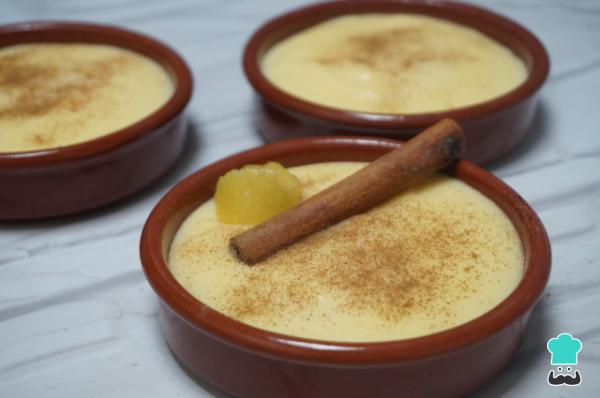
Flan de Queso 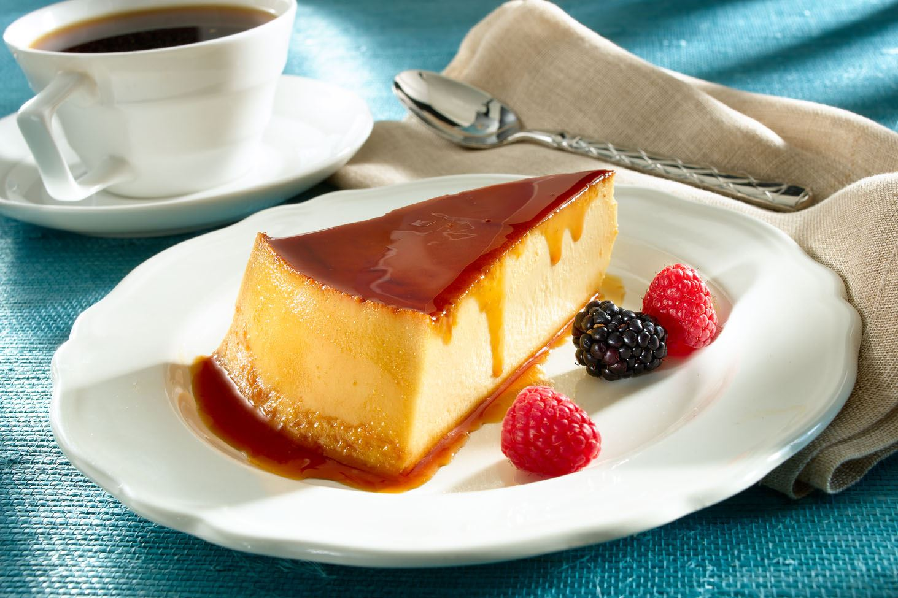
Mousse de Chocolate 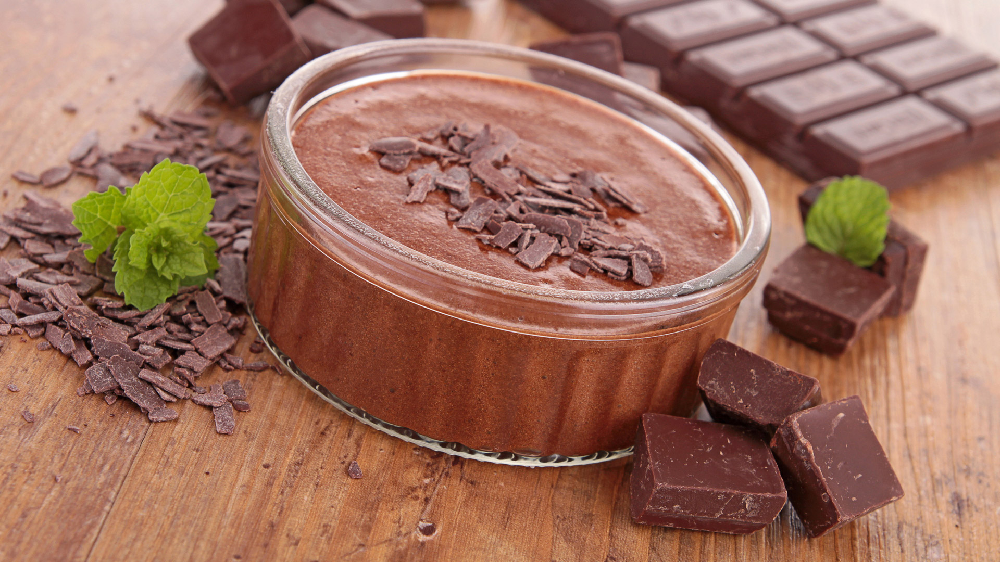
>
Pase el ratón por encima para ver imagenes de los platos
Restaurante Asador Woko
Tfno: 988451263
Plaza de España, 1. Madrid